So far, all of the indefinite sentinel loops we've looked at have been what are known as primed loops. In each case we've:

- set up the value of the variable
- tested the value against the sentinel in the loop condition
- processed the variable as needed in the loop body
- updated the variable's value at the end of the loop body
This works just fine, but it means that we have the exact same code, that used to initialize our variable, in two places: before the loop and at the end of the loop.
The process of "reading a value" before the loop starts is known as "priming" the loop, similar to the way that a bucket of water is used to prime a hand-operated water pump, similar to the one in this photo by Russell Lee, from the Library of Congress' American Memory collection.
An inline Test
Because assignment is an operator in Java, and not a statement, there is a much shorter and more concise way to write the same kind of sentinel loop. A loop employing an inline test is an extremely common Java idiom, and you should become familiar with it, even if you prefer the longer, more traditional primed loop.
Using an inline test, the loop in the PositiveMean program in the last lesson, can be rewritten like this:
// An Inline-test Sentinel Loop
while ((num = readInt()) >= 0)
{
// Loop actions
count++;
sum += num;
}
Now, you only have to initialize num once—during
the loop test—and not twice—before and at the end of the loop.
Note the additional set of parentheses surrounding
the assignment operation:
(num = readInt())
The parentheses are required because the precedence of the
relational operator (>=) is higher than the
precedence of the assignment operator. If you omit the
parentheses, Java will call the readInt()
method and compare the number it returns with zero, generating a
boolean value. When it comes time to assign the
boolean value to the variable num,
however, Java will choke because num is an
int variable, and you cannot assign a
boolean value to an
int variable.
Intentional & Necessary Bounds
Sentinel bounds are often used to search for a particular value in a set of data, such as looking for a particular word or character in a document. When used like this, however, sentinel-controlled loops have one great failing: they can't ensure that the value will actually be found.
To handle this problem, you need to add an additional item to your loop-building toolkit—you must learn to differentitate between intentional and necessary bounds. Here's the difference.
Intentional Bounds
Suppose you want to search the String s
for the character stored in c, and return the position where
the value is found. Using a simple sentinel loop you could write:
while (s.charAt(i) != c) ...
This bounds, s.charAt(i) != c, is your intentional
bounds, it is the sentinel value that will end your loop if
all goes well.
Necessary Bounds
You can't just assume that all will go well, however. It is possible that:
- The character stored in
cmight not occur in theString s - The
String smay have no characters
The bounds used to handle these kinds of conditions
are called the necessary bounds. Writing the necessary
bounds for a loop almost always involves writing a compound
boolean condition using the logical operators.
In this example, we can handle the first necessary bounds by changing the loop condition like this:
int i = 0;
int len = s.length();
while (i < len && s.charAt(i) != c)
{
i++;
}
Adding necessary bounds to a loop condition means that the loop can end for two (or more) reasons, not just one. When you write the loop postcondition statements, you have to take this into account.
For instance, after this loop terminates, you can determine
whether the character stored in c was found by
checking the value of i and len.
If i == len, then the character stored in c
was not found in the String s, because the
loop must have exited when it encountered the first
condition.
Other Necessary Bounds
Whenever you set up the initial bounds for a loop, you always need to ask yourself another question: "Have I considered every possibility? Will this loop always end, no matter what?"
If you can think of an input value or situation where the loop may not end, then you must add an additional, necessary bounds, for that situation.
Here are some of the situations that may require necessary bounds:
- As you just saw, if you are using a sentinel as the loop bounds, there are situations where the sentinel may not appear.
- When you are repeating a calcuation that gets closer and closer to an approximate limit, you may want to limit the number of repetitions.
- If you don't know that an answer actually exists, you might want to limit the amount of time spent trying to find it.
- You might not be sure of the reliability of your data and might want to provide a fail-safe exit if the data doesn't live up to your expectations.
A Termination Checklist
Remember, the most important part of writing a loop is making sure that it terminates correctly. To do that, you should have a mental checklist to make sure that it always ends, and, that it ends correctly.
There are different things you have to look for, depending
on how your loop is controlled. So for, we've looked at
counter-controlled loops (using both for and
while) and sentinel loops. Here are
the things you need to check for, (from Doug Cooper's
Treatise On Loops).
Counter-Controlled Loops
- Is there an upper limit on the number of iterations? Should there be?
- Are you counting the right thing?
- Can a partial result "blow up" as you approach the limit?
(Consider a counted loop that goes from 1 to MAX_INTEGER / 2
that stores the sum of the numbers in an
intvariable).
Sentinel-Controlled Loops
- Is there a sentinel?
- Is there more than one sentinel?
- What will you do if the sentinel doesn't show up?
- Should you be watching for a "just-in-case" sentinel? For instance, if you are summing numbers and you discover characters in input, what do you do?
Flag Controlled Loops
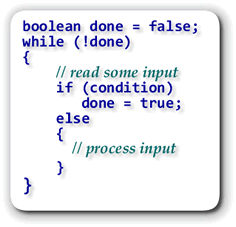
A flag-controlled loop uses aboolean
variable to control the loop. Inside the loop body, you'll
use and if-else to set the flag or
to process the data, depending on the results of
your calculation.
As with the inline test that began this lesson,
the flag-controlled loop allows you to avoid having multiple
input statements: one before the loop condition, and
another at the end of the loop body to set things up
for the next iteration.
Using a flag allows you to reorder the test condition for a sentinel loop into a form that is sometimes known as a loop-and-a-half. The illustration shows the general form for a flag-controlled loop.
The GuessOMatic
Let's look at a simple illustration program that uses a
flag-controlled sentinel loop. Our program will guess
a number between 1 and 100 and you'll try to guess it.
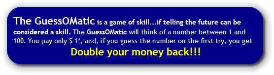
If you miss your second chance the GuessOMatic points you toward the correct answer, extracting a mere $.25* for the hint and for the wear and tear on this old program. Don't be discouraged; that means you still made $ .50* more than you paid. At this rate you'll be a millionaire in no time at all, can forget about CS 170, and retire to Hawaii!
* All amounts are virtual amounts, paid in the Zipoid currency. U.S. cash value is 0.
A Sample Run
Here's what the program looks like when it runs. Notice that
even though I only paid a dollar to play, the running prompt
let's me know what the payout will be if I guess the number
on that try. I'm not very lucky, so I only broke even:
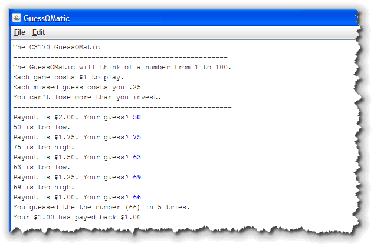
The Code
Here's how the GuessOMatic works. I'm only going to show
you the code for the run() method. You should
be able to figure out the printWelcome()
procedure on your own. (If you want to run this on your
own machine, though, you can download it by clicking
this link
and then importing it into an Eclipse project.)
Before the Loop
Before the loop starts, we need to print the welcome message
and then create some variables:
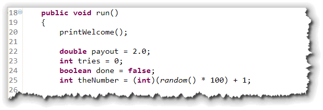
The variables we need are:- payout, hard-coded to $2.00. Assumes you've already given me the $1.00 to play the game.
- tries will be used to count the number of guesses that you needed.
- done is the
boolean flag variable that we'll use to control the loop. - theNumber is a random number (selected using
Math.random()and the algorithm you met back in Lesson 3B) between 1 and 100.
I've added static import for the functions in
the Math and String classes, so I
can use the random() and format()
functions without any extra prefix.
Inside the Loop
The loop starts with the flag-controlled bounds on
line 27. Since we set the done flag to
false when it was intialized, we'll always
enter the loop the first time.
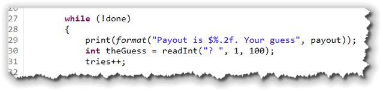
After the loop bounds, the program:- prints the current payout amount and asks the user for their current guess. reads the guess using the "bounded" form of the ACM console program's
- increments the number of attempts that the user has made.
readInt() function.
With the bounded version, you supply a lower and
upper bounds, so that your code doesn't have to check.
Below this, is the if statement, used to
control the flag. If the user's guess is equal to the
number, then the flag done is set to true:
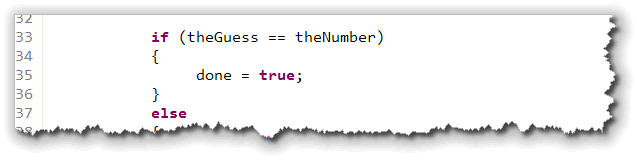
If the guess is incorrect, then we drop into the else
portion of the loop, shown here:
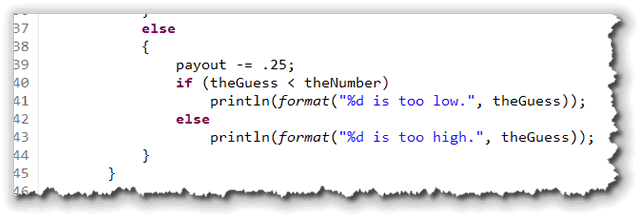
Inside the "working" portion of the loop we:- subtract the "vig" for the missed guess.
- use a nested
if-elsestatement to print a "too-high: or "too-low" message.
The else portion ends the loop, and it returns
up to the while statement on line 27, where, if
done was set to true on this
iteration, the loop ends. If the else portion
was executed instead, then the user is asked for another
number.
After the Loop
Eventually, the user will guess the correct number and exit
the loop. When that happens, the program prints a pair of
error messages:
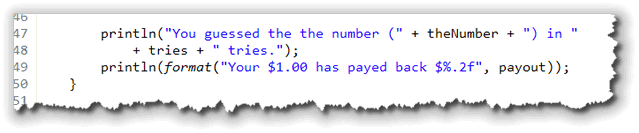
The messages display both the number guessed by the computer, (which is, of course, the same as the last number guessed by the user), the number of tries, and the total payout.Improvements
There are several things that can be done to improve the GuessOMatic. Probably the biggest one is that, unlike the advertising, the actual program does let the user "go in the hole", since the loop only exits when the correct number is guessed.
Of course, you've already learned how to fix that:
Add a Necessary Bounds Condition!
We can do that by checking both the flag and the payout
amount. When payout reaches zero, then we stop.
Here's what the improved loop looks like with this
necessary bounds added:
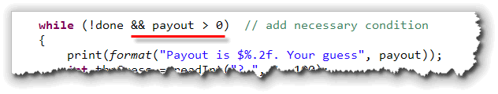
Of course, that creates a little problem with the messages
after the loop, doesn't it?
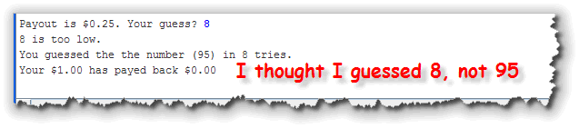
Remember that after a loop, we need to check the post-condition to see if the loop ended because we met the goal (that is, the user guessed the correct number), or, because we ran up against a limiting bounds condition, like running out of money. To fix the post-condition problem, we need to check the
value of payout and print a different message,
like this:
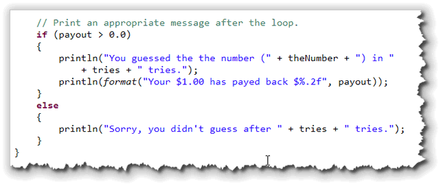
Of course if the user can't guess after eight tries (when all of the payout money is exhausted), they may not be able to figure out that they are out of money either, so you might need a more explicit message.Bottom-Testing
In addition to the for and while loops,
Java also has a loop that performs it's boolean test
after the loop body, instead of before. This loop, the
do-while loop, illustrated here,
will always execute the statements inside its body at least once.
 The body of the
The body of the do-while loop appears
between the keywords do (which preceeds the
loop body) and while. Like all loops, the body of
the do-while loop can be a single
statement, ending with a semicolon, or it can be a compound
statement enclosed in braces. As with the other loops, you'll
have a more fullfilling life if you train yourself to always use
a compound (brace-delimited) loop body.
The do-while loop's boolean
condition follows the while keyword. As with
all selection and iteration statements in Java, the
boolean condition must be enclosed in parentheses,
which are part of the statement syntax. In the
do-while loop, the boolean
condition is followed by a semicolon, unlike the while
loop, where following the condition with a semicolon can
lead to subtle, hard to find bugs.
The do-while loop is often employed
by beginning programmers, because, for some reason, it seems
more natural. If you find yourself in this situation, however,
you should think twice. 99% of the time, a while
loop or a for loop can be employed to better effect
than using a do-while. In fact, except
for salting your food...

GuessOMatic II
One application of a do-while loop is in an
ATM-type situation. You've got your money or made your
deposit, and, instead of giving you your card back, the
machine asks you "Do you want another transaction?".
This is easily handled with a do-while loop.
Let's employ this technique to make the GuessOMatic more
like its Vegas cousins. When we start the game, we'll ask
the user for a deposit. Then, at the end of each game,
we'll let them cash out, deposit more money or play again.
The do-while Loop
To do this, "wrap" all of the existing code in GuessOMatic
in a do-while loop, as shown at (2) in this
picture:
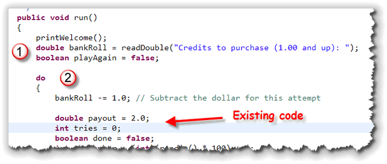
Before the loop:- Create a
doublevariable,bankRolland initialize it by asking for an inital deposit. (I'll leave writing the code to put the charge on the player's MasterCard as an "exercise for the reader".) - Create a
booleanvariable namedplayAgainand initialize it tofalse.
At the very top of the loop, right before the existing initialization statements, subtract the dollar from the bankroll for playing the game.
At the end of the loop, use the playAgain
variable as the flag bounds
in the while portion of your do-while
loop, like this:
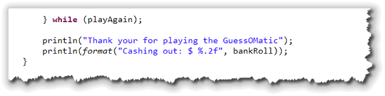
Then, after the loop, print a "Thank You" message along with the value of the player's bankroll.Controlling the do-while Loop
Inside the do-while loop, you'll place the
code that controls the next repetion of the game, after
the existing code and before the while
condition that ends the loop:
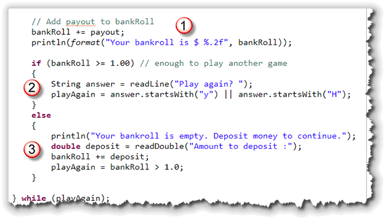
Here's what our code needs to do:- First, we need to add the winnings (if any) back to the user's bankroll.
- Next, we have two possibilies. If they still
have enough money left to play another game, ask them if
they want to continue. Store the result in a
Stringvariable. Then, use that variable to initialize theplayAgainflag variable. I'm assuming they'll enter something that starts with a "Y" to continue. - If they don't have enough money to play again,
we don't want to just drop them out. Instead, ask them
to deposit some more money. Then, set the
playAgainflag using the Boolean expressionbankRoll > 1.0.
Limit Bounds
Now that you know the syntax of the while and
do-while, let's look at another kind of bounds:
the limit bounds. A limit bounds is a natural bounds
in many mathematical, graphical and financial applications.
So, what, exactly is a limit bounds? A limit bounds
is a condition that occurs when one more repetition of the
loop would either get you no closer to the goal or would
actually lead you astray. Limits can be exact values (reducing
a number to zero, for instance), boundaries (exceeding an
upper size limit), or relative values (the difference between
two successive calculations is less than .00000001 percent).

Here are some common limit loop bounds:
- Reduction loops. Methodicaly reduce a number to zero, or less than some known value. The algorithm for integer division by subtraction is an example of this.
- Successive approximation methods. Each time a calculation is performed, the result is compared to a previous calculation. The bound is reached when two successive calculations yield approximately the same results.
- Bisection methods. These calcualte mathematical approximations. The limit is set by approaching to within some tiny amount of an answer that is known to be correct.
- Non-convergence tests. These are often the necessary bounds applied to the other techniques, to make sure they haven't gone astray.
An Example
Loops that involve limit bounds are mostly mathematical. These include things like finding the greatest common denominator (gcd) using Euclid's algorithm, calculating square roots using Newton's method, or approximating pi, using the Buffon's Needle experiment, presented in Chapter 6 of your text.
All of these are fairly difficult if you're uncomfortable with math. My goal is for you only to recognize and apply a limit loop, so I'll show you a simpler example.
The SumDigits program you wrote for Homework 7, asked you to add up the digits in an integer between 1 and 1000. Let's use a limit loop that allows you to add up the digits in an integer of any size. We'll call it SumDigits2.
The Concept
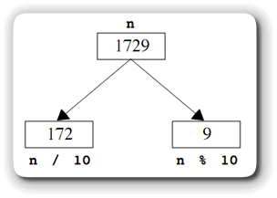
The concept behind the program is simple. When you use integer division to divide the numbern by ten, the
remainder is the single right-most digit, while the
quotient consist of the remaining digits on the left.
If we repeatedly perform this operation, eventually, n will reach 0. This is our limit.
The Code
The program begins, like the original SumDigit with
some input. Here I've told the user to enter an integer
between 1 and the largest possible integer. I used the
Integer class constant, rather than hard-coding
the number in the prompt:
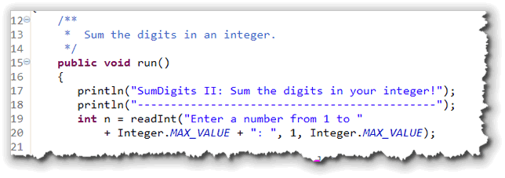
I used the "bounded" version ofreadInt() and
stored the result in the int variable n.
The loop itself consists of three sections
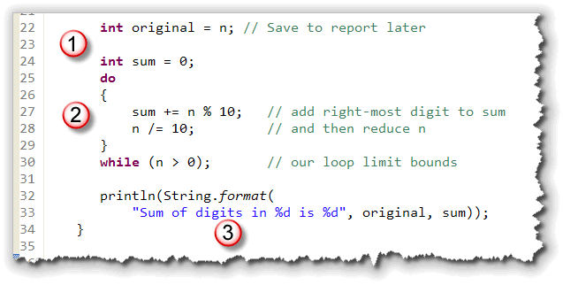
- Before the loop, I declare and initialize the
precondition variable
sumto 0. I also save the value ofnin a new variable,original, since the "reduction" algorithm will destroynwhen it is finished. - I used a
do-whileloop for this problem (although I could have used awhileloop instead). The bounds of the loop is the limit,n > 0. Inside the loop I first add the right-most digit to the sum, and then remove the digit, moving closer to the limit bounds, by dividingnby 10. - Finally, after the loop is finished, I print
both the number and its sum. Since we reduced
nto 0, I must use the variableoriginalto report the original number entered.
Here's what the program looks like when it runs:
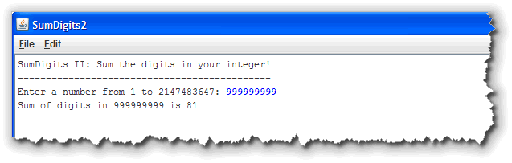
Coming Up ...
In this lesson, you learned how to write indefinite loops, those that test a condition, rather than testing the value of a counter. You also learned how to write loops that have both an intentional and necessary bounds, how to write a flag-controlled loop, and how to use the do-while loop, a loop that performs its test after, rather than before, executing the loop body. You ended the lesson by looking at some indefinite loop applications, using limit bounds.
In the next lesson, we'll look at two loop-related topics: how to use Java's jump statements, and how to use the Java's iterator statements.